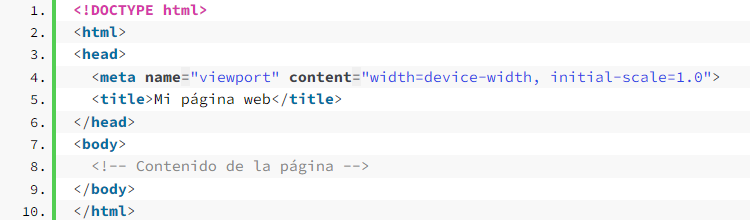

¿Qué es el diseño web responsivo?
Concepto:
El diseño web responsivo es un concepto de desarrollo web que se centra en hacer que los sitios se vean y se comporten de manera óptima en todos los dispositivos informáticos personales, desde el escritorio hasta el móvil.
Ventajas de un diseño web responsivo
En un mundo en el que las personas usan cada vez más el móvil, las páginas web deben adaptarse indiscutiblemente a esta realidad. Y consecuentemente, apostar por un diseño responsivo se ha convertido en un requisito imprescindible, especialmente si se tienen en cuenta el gran número de ventajas que reporta. Estas son algunas de las más importantes.
- Mejora la experiencia de usuario.
- Favorece el posicionamiento SEO.
- Evita el contenido duplicado.
- Mejora la velocidad de carga.
- Reduce los costes.
Viewport en el diseño web responsivo
Viewport (ventana gráfica) es una metaetiqueta ubicada en el head del HTML. Es la parte visible de una página web que los usuarios pueden ver desde la pantalla de su dispositivo o monitor.
Es decir, la etiqueta meta viewport controla el ancho de la página dependiendo del dispositivo en el que se encuentre el usuario.
Configuración del viewport
Las propiedades más comunes utilizadas en «content» de la metaetiqueta viewport son:
- «width«: Especifica el ancho inicial del viewport. (width=device-width) establece el ancho inicial del viewport para que coincida con el ancho del dispositivo.
- «initial-scale«: Define el nivel de escala inicial del viewport. (initial-scale=1.0) establece que la página se mostrará inicialmente sin ninguna escala.
- «minimum-scale» y «maximum-scale»: Estos atributos permiten establecer los límites mínimos y máximos de escala del viewport, controlando si el usuario puede hacer zoom en la página.
- «user-scalable«: Este atributo permite habilitar o deshabilitar la capacidad del usuario para hacer zoom en la página. Si se establece en «yes», el usuario podrá hacer zoom; si se establece en «no», se deshabilitará el zoom.
Ejemplo de cómo se vería la metaetiqueta «viewport» en el código HTML:

Media Queries
Una media query es una función de CSS3 que permite especificar la visualización de un documento para diferentes medios de salida y tamaños de pantalla.
La visualización se ajusta en función de determinadas condiciones como el tipo de medio, la orientación de la pantalla o su resolución.
Ejemplo del funcionamiento de los media queries
- Primero tenemos una estructura HTML para introducir un título y un párrafo en una página web, como el siguiente:
- Aplicamos las siguientes reglas CSS, para especificar lo deseado (visualización celeste en celular y verde en PC):
- Al aplicar estas reglas CSS, estamos logrando que el título y el párrafo en la página web tengan el comportamiento que deseamos: